Corinne SSF
April 2005 filly
Corcovado x Lorentin I (HOL) x Lord Calando (HOL)
Awarded Premium Star mare with the ISR/Old, at her mare inspection
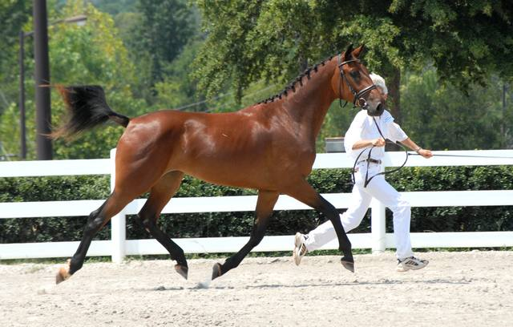
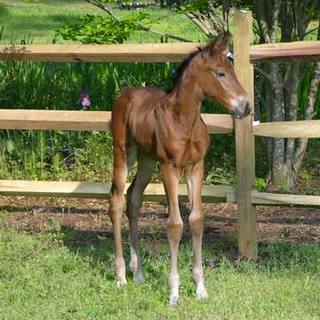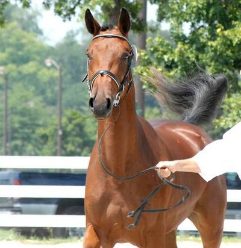

Cronos de Medi
2009 colt out of a Selle Francais dam bred by Lori Lynn-Davis.
Premium colt and Reserve Champion Colt at his ISR/Old inspection.
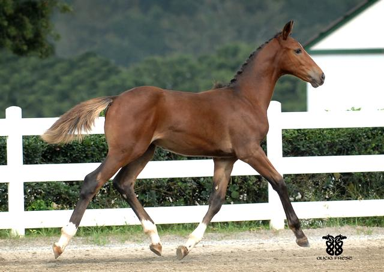
Centuarus
2008 colt out of a TB dam bred by James Green and Paula Curry.
Premium colt and Reserve Champion Colt at his ISR/Old inspection.
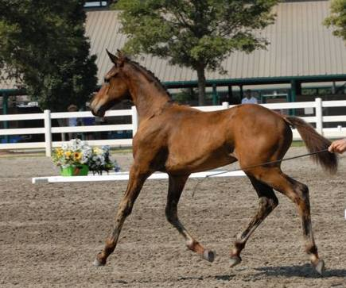
Caliente
2008 filly out of a Graf Goetz dam bred by Lisa Dunn
Premium filly at ISR/Old inspection
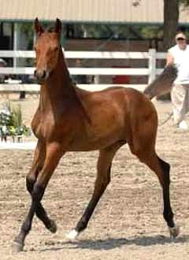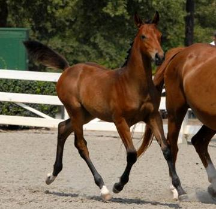
Calcutta
2008 Colt bred by Cherie Tatro out of a Holsteiner dam.
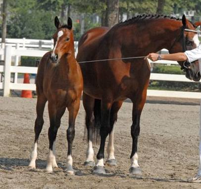
Walentina
2008 filly bred by Betsy Cawley out of a Hanoverian dam.
Recieved an 8.3 for overall impression and an 8.2 for type at her ISR/Old inspection
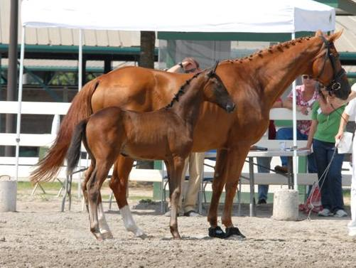
Contagious LBA
2008 colt bred by Ed & Sue Bradley out of a TB dam
Awarded Gold Premium at his RPSI inspection with a conformation score of 8.2
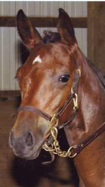
Coco C
April 2006 filly
Corcovado x Wertherson(HAN)
As of May 2007, leading yearling filly for USEF HunterBreeding
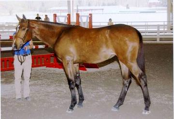
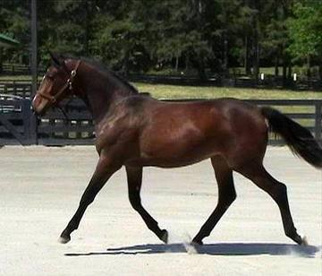
Curious Jack SSF
July 2005 colt
Corcovado x Coeur de Lion x Illusivo
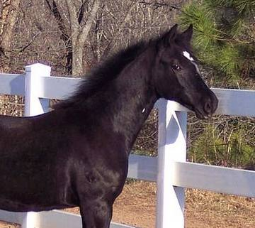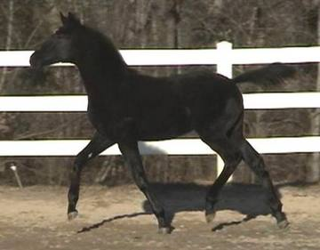